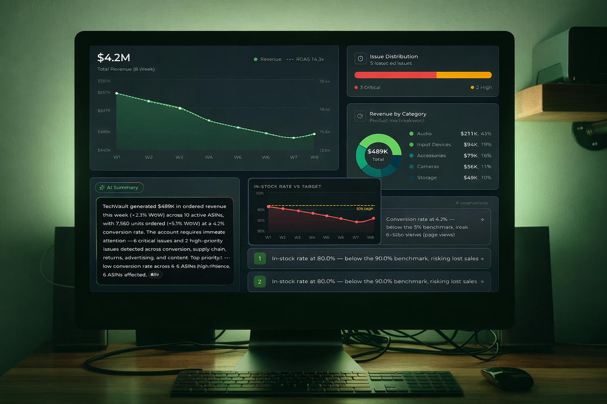
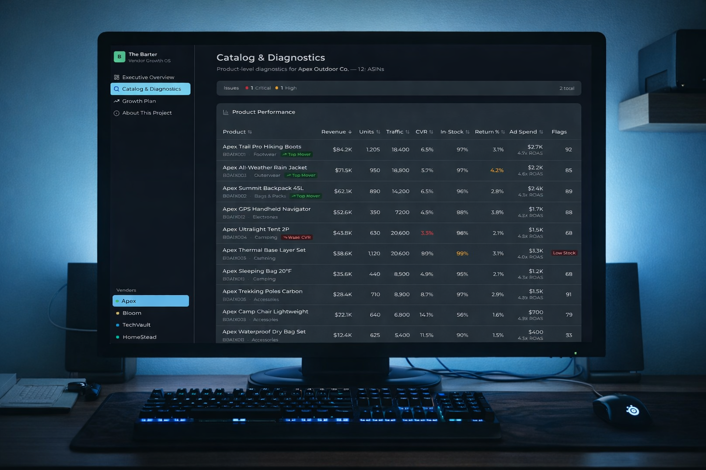
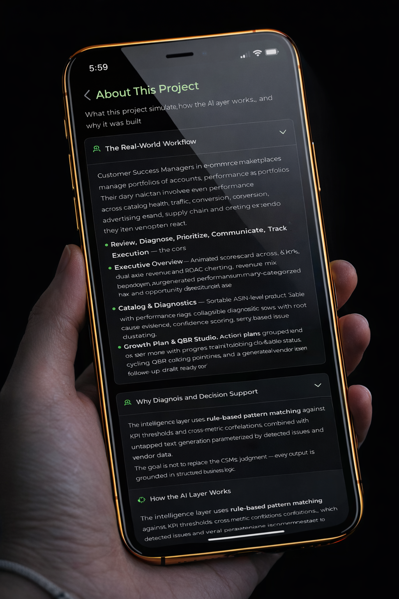
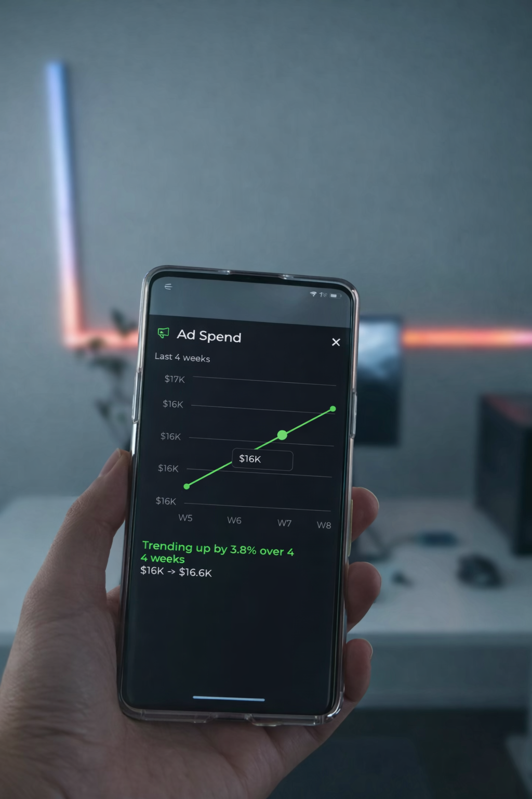

Customer Success Managers in retail and e-commerce manage portfolios of vendor accounts. Their daily work involves reviewing performance across catalog health, traffic, conversion, advertising efficiency, and supply chain, then translating those findings into action plans and business reviews. The Barter simulates this full cycle: Review, Diagnose, Prioritize, Communicate, Track Execution. Each page maps to a stage of that workflow, from an executive overview with animated scorecards and AI-generated summaries, to ASIN-level diagnostics with root cause evidence, to a growth plan studio with QBR talking points and vendor follow-up drafts.
The Barter goes beyond data display by adding a decision-support layer: automated issue detection, root cause explanation, confidence scoring, and structured recommendations. The goal is not to replace the CSM's judgment, but to accelerate it. The tool surfaces what matters, explains why it matters, and suggests what to do about it, so the CSM can spend more time on vendor relationships and strategic decisions.
The intelligence layer uses rule-based pattern matching against KPI thresholds and cross-metric correlations, combined with templated text generation parameterized by detected issues and vendor data. This is not freeform LLM generation. Every output is grounded in structured business logic. Three intelligence functions power the system: diagnostics that detect issues across conversion, inventory, returns, content quality, and ad efficiency; summaries that generate executive overviews and QBR talking points; and recommendations that map issues to grouped action plans by owner team. Every AI output includes a "How this was generated" explainer, making the system transparent and auditable.
Every chart, metric, and finding is designed to respond to user interaction. The Week 9 Simulation lets you adjust all 8 vendor-level metrics via sliders, then run the full AI diagnostic pipeline against the hypothetical data. The entire dashboard re-renders with simulated results. Clickable key findings open contextual charts. Metric drill-downs show 4-week trends with delta analysis. Risk and opportunity popovers reveal affected ASINs, confidence levels, and the specific data points that triggered detection. Revenue donut segments, severity bars, and category breakdowns highlight in sync across widgets.
The Barter demonstrates three things: working familiarity with how a retail CSM diagnoses vendor performance and correlates cross-metric signals; workflow design that supports judgment, prioritization, and communication through interactive exploration and scenario modeling; and practical thinking about where AI adds value in a customer-facing operational role, favoring grounded analysis over generative speculation, transparency through explainability, and clear boundaries between automation and human decision-making.
"The best CSM tools don't just display data -- they accelerate judgment. This workspace turns metric review into diagnosis, and diagnosis into action."

Interactive 3D globe visualizing ~99,000 real-world mysterious phenomena across 10 categories.

Domain threat intelligence dashboard with live scanning, multi-source enrichment, AI triage, and full case-to-enforcement workflow.